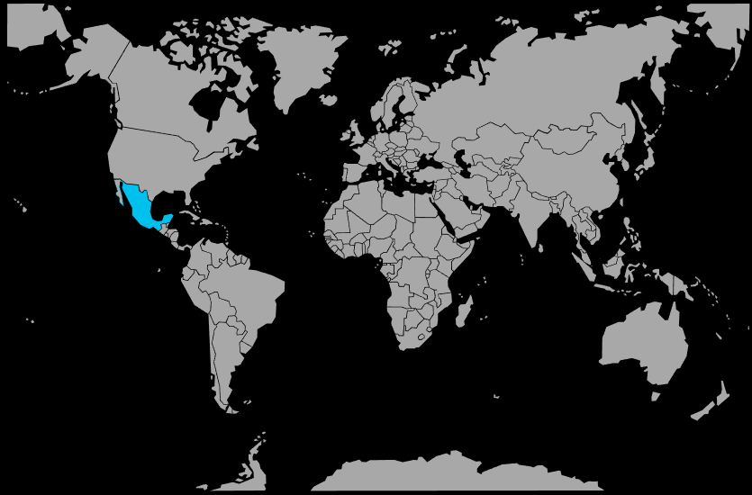

Systématique
- Ordre : Cyprinodontiformes
- Famille : Goodeidae
- Genre : Ilyodon
- Espèce : Ilyodon furcidens
Ilyodon furcidens est un goodeidae robuste d’Amérique centrale, au corps allongé rappelant une petite truite, souvent orné d’une poitrine dorée plus ou moins marquée.
Les adultes atteignent environ 8–10 cm et vivent en groupe; c’est un poisson vif et très actif qui apprécie les bacs spacieux, bien filtrés et fortement oxygénés.
L’espèce occupe surtout la zone médiane et inférieure, nageant sans cesse à contre‑courant; les interactions entre mâles peuvent être vives, mais restent en général limitées à des intimidations si le volume et le décor sont adaptés.
Globalement pacifique pour un goodeidae de cette taille, il doit cependant être maintenu avec des poissons capables de supporter une eau fraîche et un courant marqué, en évitant les espèces trop calmes ou très petites qui pourraient être bousculées ou stressées.
Reproduction : vivipare (goodeidae); la gestation est relativement longue et aboutit à de petites portées mais de jeunes de grande taille, déjà très autonomes et capables de consommer la même nourriture que les adultes.
Les parents prédatent peu leurs propres jeunes dans de bonnes conditions, mais un bac bien structuré, riche en caches et en plantes, augmente nettement le taux de survie des alevins.
Dimorphisme sexuel : mâle généralement plus coloré et plus mince, avec une nageoire anale modifiée en andropodium; femelle plus grande, plus trapue, au ventre plus volumineux lorsqu’elle est gravide.
Biotope : rivières et ruisseaux frais, bien oxygénés, souvent à courant marqué, avec substrat pierreux, zones de galets et végétation variable sur les berges.
Répartition
Origine naturelle :
- Ouest et centre du Mexique, principalement dans les bassins des rivières se jetant dans le Pacifique (Jalisco, Colima, etc.).
- Rivières et ruisseaux peu profonds, à courant soutenu, avec alternance de zones rocheuses et de secteurs plus calmes.
Ces milieux, souvent modérément frais et bien oxygénés, expliquent la bonne tolérance de l’espèce aux températures plus basses que celles des bacs tropicaux classiques.
Paramètres de maintenance
Température : 18 à 24 °C, avec une préférence pour une eau plutôt fraîche que trop chaude.
pH : 7,0 à 8,0, eau neutre à alcaline.
GH : 10 à 20 °dGH, eau dure à très dure.
Courant : modéré à soutenu, avec forte oxygénation et filtration efficace, reproduisant un environnement de rivière.
Volume conseillé : au minimum 150 L pour un groupe, avec une grande surface de nage et des zones de repos entre les roches et les plantes.
Régime alimentaire
Régime : omnivore à dominante végétale; accepte granulés et flocons, nourriture congelée ou vivante, avec un apport régulier de verdure (spiruline, légumes pochés, algues) pour éviter les problèmes digestifs.
Une alimentation variée, distribuée avec modération et incluant une bonne proportion de végétal, permet de maintenir ces goodeidés en bonne santé et de limiter les risques de surpoids et de pollution de l’eau.